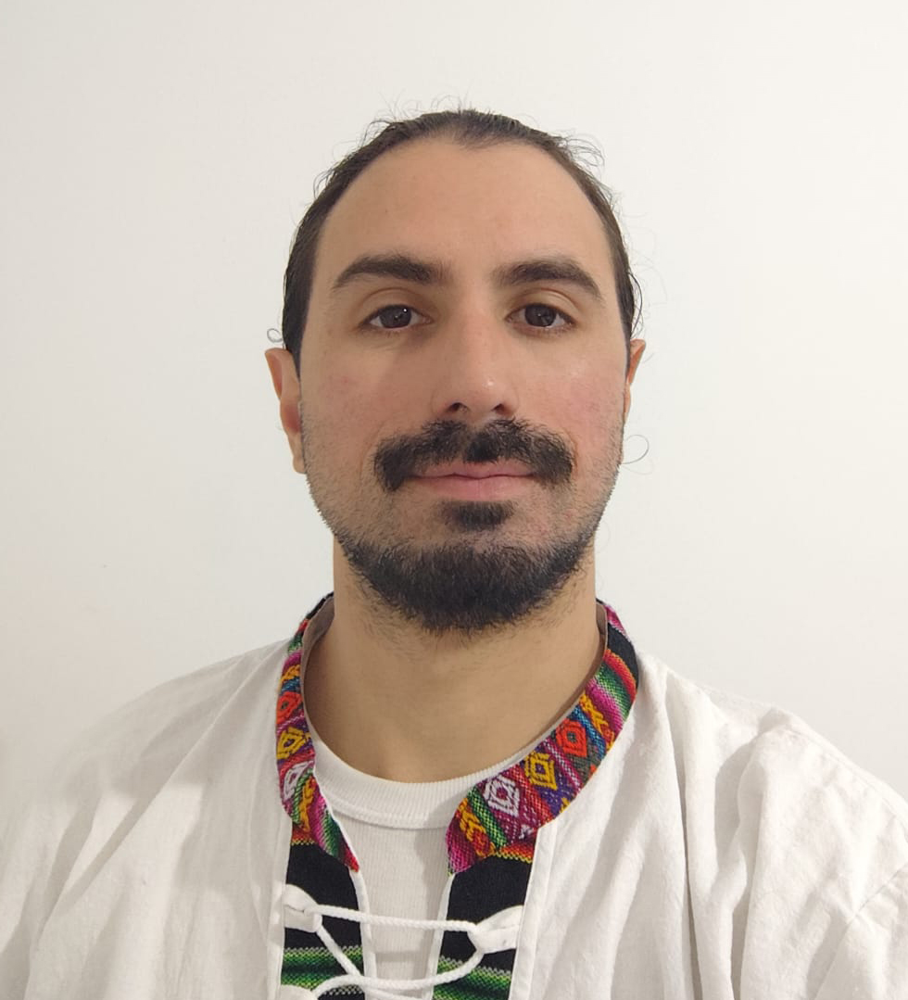

Sobre mí
Un poco de mi historia y lo que me motiva como desarrollador.

Hola, soy Fran üëã
Soy un apasionado del desarrollo web y la creatividad. Estudio programación desde hace varios años y me interesa tanto el lado técnico como el artístico de los proyectos digitales.
Actualmente me estoy enfocando en JavaScript, React y diseño web responsivo, además de construir un portfolio sólido con proyectos reales.
Más allá del código, disfruto del teatro, la fotografía y la exploración creativa, buscando siempre unir valores como la empatía, la presencia y el trabajo en equipo en todo lo que hago.
Contáctame